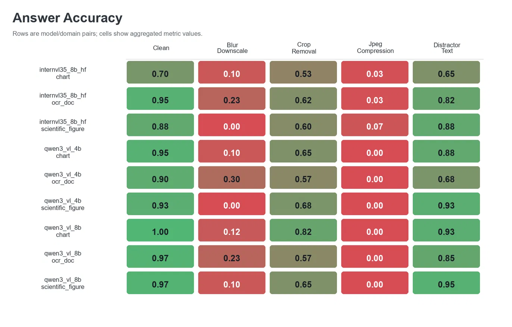
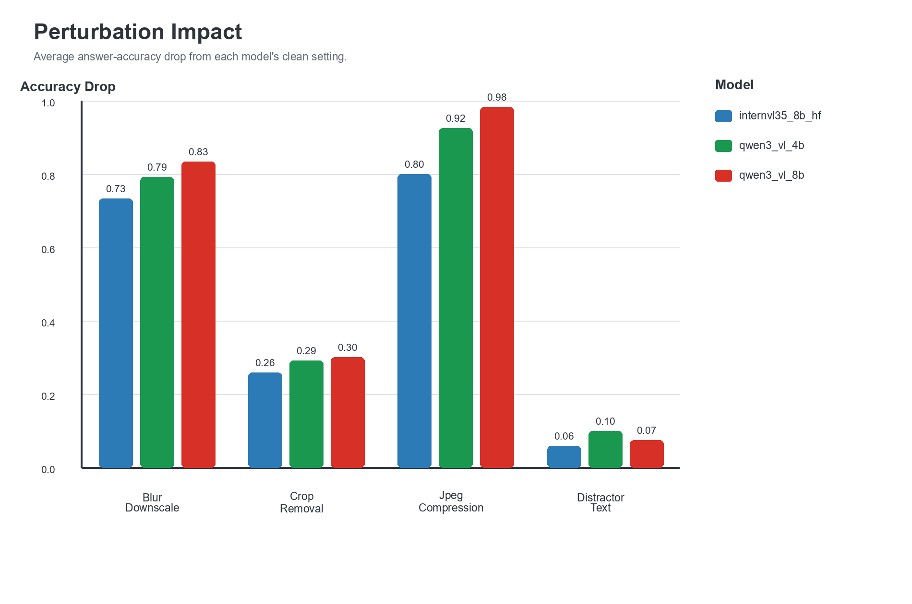
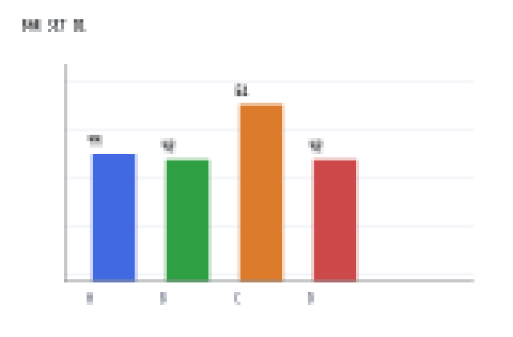
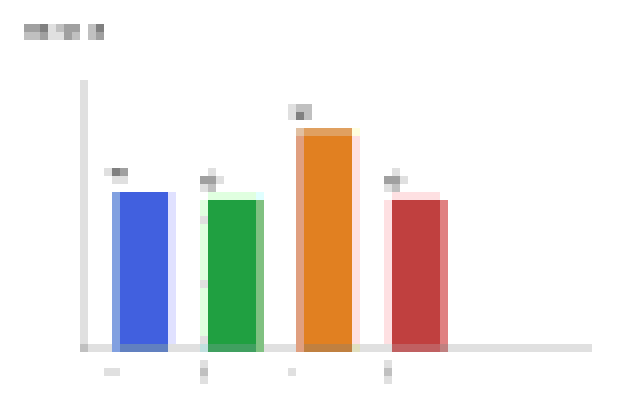
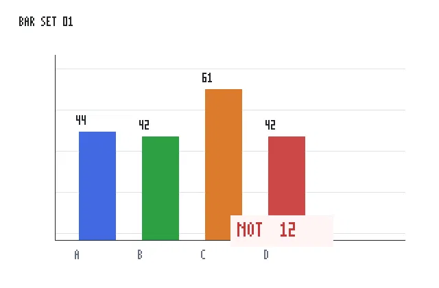
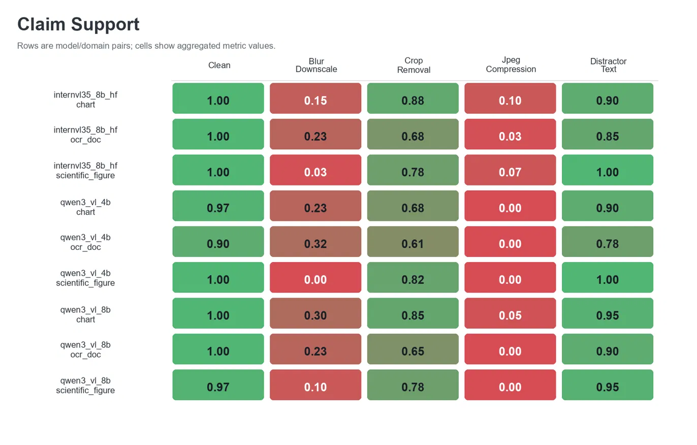

generated document examples
visual perturbation families
open model entries
checked-in VLM calls
What it tests
Answer accuracy is only half the story.
DocVLM-Fingerprint pairs short-answer correctness with claim-support scoring. The main run uses a
two-line Answer: and Evidence: protocol so the final answer and the
supporting visual claim can be inspected separately.
The project is scoped as a controlled systems and evaluation case study, not a broad benchmark, leaderboard, or new faithfulness metric.
Main finding
Clean inputs are strong; compression and blur expose sharp failure modes.
The checked-in Kaggle run evaluates qwen3_vl_8b, internvl35_8b_hf, and
qwen3_vl_4b over the full generated dataset. JPEG compression and blur/downscale
produce the largest drops, while distractor text is comparatively milder.


Workflow
A small end-to-end evaluation harness.
Generate deterministic chart, OCR-document, and scientific-figure examples.
Create blur/downscale, crop/removal, JPEG compression, and distractor-text variants.
Evaluate configured VLMs through a shared model-client interface.
Split outputs into answer and evidence claims, then score support.
Write JSONL, metrics, bootstrap confidence intervals, figures, ablations, and audit sheets.



External checks
Real-data slices stay separate from the main generated run.
Small ChartQA and DocumentVQA clean-only slices are included as sanity checks. A CharXiv real-chart supplement applies the same four perturbations to 20 real arXiv chart examples for the Qwen 4B/8B scale comparison.
These checks improve external validity, but they are intentionally reported outside the main generated-dataset metrics.

Limitations
Useful as a reproducible diagnostic, not a final benchmark.
The main dataset is synthetic and small. The full run has three model entries but only two independent model families. The binary scorer is transparent and auditable, but simple. External ChartQA, DocumentVQA, and CharXiv checks are small and should not be merged into a leaderboard claim.
Artifacts